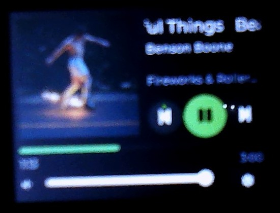

Spotify Deck
An ESP32 touchscreen that shows what Spotify is playing, with album art, play/pause, skip and volume. Open source, set up in two minutes with your phone.

Features
Now playing
Album art, scrolling title, artists, album and a live progress bar. Podcasts too.
Touch controls
Previous, play/pause, next and volume with instant feedback (Spotify Premium).
Two-minute setup
Scan a QR code for Wi-Fi, scan another to log in to Spotify. No app, no laptop.
Updates over Wi-Fi
Install new firmware from a browser; it rolls back by itself if anything goes wrong.
Every artist name
Accented and Cyrillic names render properly: Beyoncé, Måneskin, Dvořák, Кино.
Open and tested
MIT licensed ESP-IDF + LVGL firmware with on-device unit tests and hardware-in-the-loop tests.
What you need
- Elecrow CrowPanel 2.4" ESP32 HMI (also sold as the "ESP32 Miner LCD 2.4", SKU DHM04624D): ESP32, 320x240 touchscreen, USB-C. No soldering.
- A USB-C cable and a computer with Chrome or Edge (for the one-time install).
- A phone, 2.4 GHz Wi-Fi, and a Spotify account (Premium for the controls).
Install
- Connect the board to this computer with USB.
- Click the button and choose the board's serial port (CH340 / USB-SERIAL).
The firmware on this page signs in to Spotify with the maintainer's developer app, which Spotify limits to 5 accounts. If linking says your account is not allowed, build with your own free Spotify app (5 minutes): build from source. Installing erases the board.
Set it up
- Welcome: tap Start.
- Wi-Fi: scan the QR code with your phone camera; pick your network on the page that opens.
- Spotify: with the phone back on your Wi-Fi, scan the next QR code, log in and tap Agree.
- Play music on any device: the deck shows it.
Later: the gear button opens Settings (Wi-Fi, Spotify, touch calibration, firmware update,
factory reset). Updates: http://spotifydeck.local/update.
How the Spotify login works
Spotify only returns to https:// addresses after login, and the deck is a plain-HTTP
device on your home network. So the login (OAuth with PKCE) is started by the deck, Spotify sends
your phone back to this page, and this page immediately forwards it to the deck, which
finishes the login. Nothing is stored here, and the one-time code is useless without a secret that
never leaves the deck. Privacy.